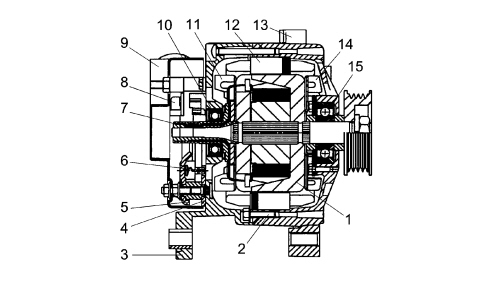
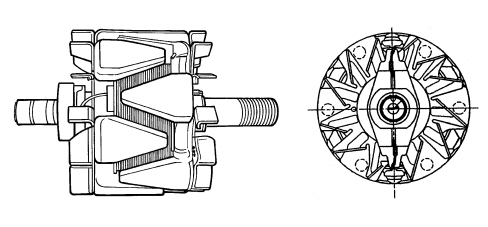
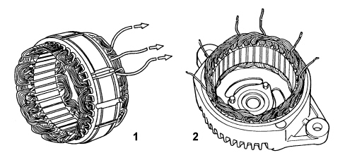
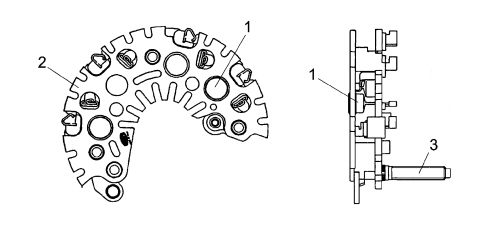
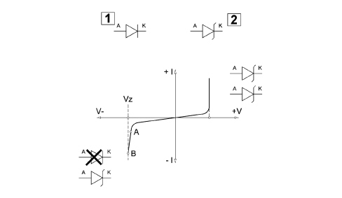
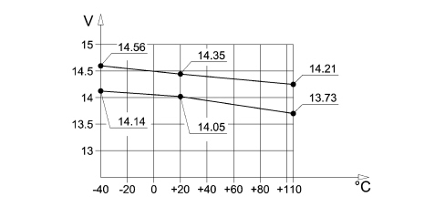
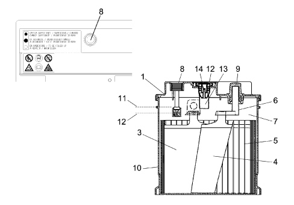
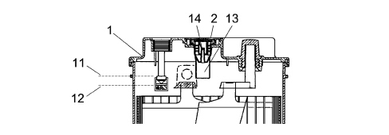
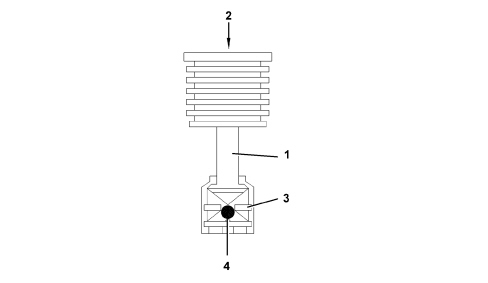
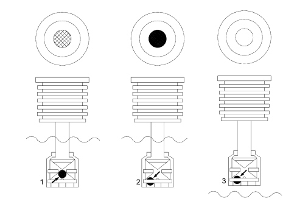

INTRODUCTION - CURRENT GENERATION
- Path
- Descriptions > 55 ELECTRICAL EQUIPMENT > 5530 CURRENT GENERATION > INTRODUCTION - CURRENT GENERATION
- Kind
- system description
- Applies to
- all engines; all production periods
- Interactive page
- https://sloeber94.github.io/elrnDB-fCrm/en/#/194001901
Applies to: all engines; all production periods
5530A ALTERNATOR AND COMPONENTS
Composition
The alternator is a rotary machine that transforms mechanical energy into electrical energy.

1 - Rotor electromagnetic circuit
2 - Fitting rods
3 - Rectifier side support
4 - Negative heat dissipation plate
5 - Positive heat dissipation plate
6 - Zener type power press-fit diode
7 - Commutator
8 - Regulation unit
9 - Heat shield cover
10 - Rectifier side bearing
11 - Rectifier side inner fan
12 - Stator electronic circuit
13 - Control side support
14 - Control side inner fan
15 - Control side bearing
As with all electrical machines, it is made up of two basic parts: inductor (rotor) and stator.
The rotor for an alternator with internal ventilation is illustrated in the diagram below.

Rotor
The rotor consists of a cylindrical magnetic core, concentric to the driveshaft, with a toroidal coil winding and two opposing magnetic impellers which are magnetized by the winding located in the actual core.
The impellers have six talon shaped poles each with reciprocal interpolation producing six alternate North poles and six South poles. There is therefore a single rotor winding which produces the e.m.f. for all the partial magnetic circuits.
Stator
The following diagram shows the stator.

1 - Star connection stator
2 - Triangle connection stator
The stator consists of a ring shape pack joined by two or more axial seams electrically welded on the outer part. It is normally equipped with thirty six grooves which contain a three-phase winding made from copper wire insulated with vinyl acetate and connected, as necessary, in a star or triangle formation.
Rectifier bridge
The rectifier bridge is illustrated in the diagram.

1 - Zener type power diode
2 - Dissipation plate
3 - Alternator B + terminal
Specifications of the bridge
The bridge consists of:
- Zener press-fit diodes.
- Diodes fitted in the dissipator plates electrically welded to the connection terminals.
- Sheared dissipator plates.
- Large dimension dissipators.
- Phase insulation until the connection with the bridge via a rubber cable duct.
- Limitation of excess tension in the case of "+ battery" load disconnection guaranteed by zener diodes.

1 - Normal diode
2 - Zener diode
Zener diodes
The feature of both diodes, if polarized directly, is to pass the current from the anode to the cathode (V+ I+): then a zener diode behaves like a normal silicon diode.
If inversely polarized, the current does not initially pass from the cathode to the anode up to value VZ. Beyond value VZ the normal diode is destroyed, the zener diode, on the other hand, continues to operate normally because its resistance in these conditions decreases sharply. Zener diodes are therefore voltage stabilizer diodes. Voltages of between 4.7 and 24 Volts are used in cars. It is one of the most important components in the regulation unit.
It is often used for protection against polarity inversion or as protection against excess voltage.
Specifications of internal ventilation alternators
The main feature of this type of alternator, with a 115 mm stator diameter, is having dual internal ventilation with the vanes at an angle to guarantee the maximum flow of air and limit noise at the same time.
For the same power output alternators with internal ventilation are smaller and lighter than types with external ventilation thereby satisfying current application requirements (there is always less space in engine compartments). In addition to this, in terms of quality, reliability and durability, these alternators meet higher standards than the best competition currently on the market.
In depth studies and research have made it possible to introduce measures in production to reduce noise limits produced by various components (fluidynamics, magnetics, mechanics).
Typical voltage curve
The graph below illustrates a typical voltage regulator curve.

Technical data
The types of alternator adopted on this vehicle are summarized in the table.
1.8 16V | 2.2 16V | 1.9 Multijet 8V | 1.9 Multijet 16V | 2.4 Multijet 20V | |
|---|---|---|---|---|---|
Make and type | DRM30 | - | A127IM | A127IM | SC2 |
Voltage (V) | 14 | 14 | 14 | 14 | 14 |
Nominal current (A) (1800 -6000 rpm) | 70 - 120 | 65 –120 | 70 – 120 70 - 140 (*) | 70 – 120 70 - 140 (*) | 88 - 150 |
Supplier | Delco- Remy | Bosch | Denso | Denso | Denso |
(*) Versions with automatic transmission or light tropical or UK
Operation
With the alternator still with the ignition in the ON position, the Body Computer lights up the warning light in the instrument panel and sends a power supply to the voltage regulator built into the alternator via terminal D+.
In these conditions the energizing circuit (rotor) is enabled to earth by the regulator electronics.
With the alternator rotating through the effect of the variation of the rpm and the magnetic field, a three-phase alternating voltage is produced in the electrical circuit (stator) which rectified by the diode bridge can exit terminal B+.
When the upper fixed calibration level (13.7 - 14.2 V) is reached it charges the battery and supplies the system.
The Body Computer checks the efficiency of the alternator recharging system by detecting two parameters: the voltage signal coming from terminal D+ of the actual alternator and the engine rpm signal received on the CAN from the engine management control unit.
At the key-on as long as the voltage is below around 5.5 V, the Body Computer signals the insufficient recharging state; when the voltage exceeds 5.5 V, the warning light goes out; if, on the other hand, with the engine moving (speed above 700 rpm), the voltage decreases below the level of 4.5 V, then the warning light comes on constantly accompanied by the display of a message.
5530B BATTERY AND LEADS
Specifications
The main specifications of the batteries used on new models are the active material support plates produced thanks to the calcium lead production technology that has replaced the older antimony lead one.
This involves a mechanical stretching process with a continuous lead band resulting in the final production of the grid spread with lead oxide for the positives and metallic lead only for the negatives, rather than the use of casting machines for producing grids through fusion.
The use of materials such as lead-calcium-tin alloy guarantees a considerable reduction of the phenomenon of electrolysis in the operation of the accumulator (dissociation of the water into is hydrogen and oxygen components) and the quality of the gases that can escape thereby causing less evaporation of the actual water with a consequent drastic reduction in the maintenance required for this type of battery.

1 - Cover
2 - Plug lip
3 - Positive plate
4 - Negative plate
5 - Separator
6 - Bridges
7 - Electrolyte
8 - Water gauge
9 - Negative pole
10 - Monobloc
11 - Maximum electrolyte level
12 - Minimum electrolyte level
13 - Plug
Battery electrical specifications
Reduced maintenance type lead accumulator with acid.
Cover: EURODIN, fitted with closing devices on ramp type cover; pressure plugs (one plug per element) with system to prevent penetration of fluids from the outside. Gas evacuation through plugs equipped with gas/liquid separation system.
Cover sealing: thermowelding.
Attachment to the base: standardized on four sides.
Poles: lead bushes produced by cold pressing with seal in the pressing area on the cover.
Electrolyte level check: via the openings in the cover plugs, checking the consistency between the indicator (dipstick) and the level of the electrolyte. The dipstick indicates the maximum permitted level, therefore the electrolyte should barely come into contact with the lower end of the dipstick. The minimum level is reached when the electrolyte exceeds the top of the separators and/or the plates by 10 mm.
Water gauge for checking minimum electrolyte level and battery charge.
No. of plates: 6 positive + 5 negative.
Grid alloy: lead-calcium-tin.
Separator thickness: 1.15 mm.
Plate thickness: positive 1.80 mm; negative 1.60.
Electrolyte density: 1280 ± 0 g/dm3 at 25°C with battery 100% charged.
Electrolyte density at 25° Celsius:
-1280 g/litre 100 % charged
- 1240 g/litre 75 % charged
- 1200 g/litre 50 % charged
- 1160 g/litre 25 % charged
- 1120 g/litro run down
- 1110 g/litre completely run down.
Control system
The battery is fitted with an indicator for checking the charge which a water gauge that makes it possible to monitor the quality of the electrolyte level and the state of charge of the battery; this also allows the customer to make an initial check on the efficiency of the battery.
This device comprises a transparent plexiglas cylinder: one end contains a gauge fastened to the cover of the battery; at the other end there is a drip tray, made from an acid-resistant material, drilled to allow contact between the battery electrolyte and a green coloured ball, housed in the drip tray, that can slide along a plane tilted towards the centre of the cylinder.
The colour of the gauge provides information on the state of the battery charge as summarized in the table below:
CONDITION 3 | CONDITION 2 | CONDITION 1 | |
|---|---|---|---|
Information visible | Light, bright colour | Dark colour without green area in the middle | Dark colour with green area in the middle |
Electrolyte level | Below minimum | Correct | Correct |
Undefined charge status | Lower | Battery run down | between 55% and 100% |
Action to be taken | Top up electrolyte with distilled water | Recharge battery | No action |
This device:
- does not provide information concerning any possible internal short circuits;
- the density of the electrolyte varies with the temperature;
- if the vehicle is stationary for a prolonged period this could have halted the mixing process of the reagents and therefore the measurement might only refer to the surface layers;
- if the electrolyte level is low, the readings are not reliable;
In conclusion, the measurement is accurate to within 15% (charge status gauge reading = 70% ± 15%).
On account of this degree of error in the reading, the battery charge should be checked more accurately at the Service Centre.
Plug
In reduced maintenance type batteries with lead-calcium-tin elements the seal is guaranteed by pressure plugs with an anti-penetration system and a device that evacuates gases through the actual plugs.
The plug allows the escape of gases produced in the battery, preventing however the loss of liquid. The plug consists of:
- The plug body: it acts primarily as an obstacle to the liquids, but allows the escape of gases via special openings.
- The labyrinth: prevents the particles that are released during the operation of the battery from blocking the special diaphragm.
- The semi-permeable diaphragm: thanks to a special PTFE layer (polytetrafluoroethylene) it prevents the escape of the liquid allowing, however, the gases that are produced during the normal operation of the battery to pass through.
1 - Plug body
2 - Labyrinth
3 - Membrane
Technical specifications of the battery
The main technical data for the battery is summarized in the table.
1.8 16V | 2.2 16V | 1.9 Multijet 8V | 1.9 Multijet 16V | 2.4 Multijet 20V | |
|---|---|---|---|---|---|
Voltage (V) | 12 | 12 | 12 | 12 | 12 |
Capacity (Ah) | 70 | 70 | 70 | 70 | 70 |
Intensity (A) | 450 | 450 | 450 | 450 | 450 |
Versions with alarm/light tropical
1.8 16V | 2.2 16V | 1.9 Multijet 8V | 1.9 Multijet 16V | 2.4 Multijet 20V | |
|---|---|---|---|---|---|
Voltage (V) | 12 | 12 | 12 | 12 | 12 |
Capacity (Ah) | 90 | 90 | 90 | 90 | 90 88 (*) |
Intensity (A) | 440 | 440 | 440 | 440 | 440 580 (*) |
(*) Versions for Cold Countries
Battery discharge at rest
During the design stage, the correct dimensions of the battery for every model/trim level also take into account the absorption from loads when the ignition is switched off.
These absorptions should not exceed 0.6 mA for every Ah of battery capacity; this condition is adopted to guarantee that, after the vehicle has been stationary for a month with all the loads that are not ignition-dependent on, the residual capacity of the battery is half of the rated capacity, corresponding to a charge status that can guarantee starting in normal ambient temperature conditions.
The table below contains several examples.
Battery | Max. absorption |
|---|---|
40 Ah | 24 mA |
50 Ah | 30 mA |
60 Ah | 36 mA |
Battery fluid level check/top up
Undo the plugs on the battery cover, or remove the plug cover (2) and release the plugs which are a press fit in each individual cell.
In the max level condition (11) the electrolyte should barely come into contact with the lower end of the dipstick (3) located inside the battery and visible via the openings in the cover for each cell producing the so-called "meniscus effect".
In the min level condition (12) the electrolyte should exceed the top end of the separators and/or the plates by about 10 mm.

1 - Cover
2 - Plug lip
11 - Maximum electrolyte level
12 - Minimum electrolyte level
13 - Dipstick
14 - Plug
To check this condition the clean stick made from a non metallic material (e.g. wood, glass, plastic) should be immersed in the electrolyte until it touches the top of the separators and/or the plates measuring the height of the electrolyte reserve.
It is understood that in order to measure the level of the electrolyte, the battery should be on a flat surface and all the cells should be visible from above; if this is not the case because it is not possible, the battery should be removed from the vehicle.
The operations of checking the electrolyte level and, if necessary, topping it up through the individual openings for the battery cells, should not be carried out by the Customer, but by suitably trained dealer personnel during the services every 20,000 km.
Water gauge
There are two types of information supplied:
- electrolyte fluid level;
- battery charge status.

1 - Cylinder
2 - Gauge
3 - Drip tray
4 - Ball
Operation
The operating principle for this equipment is based on the contact of the drip tray with the battery fluid.
The ball is designed so that for a given electrolyte density value it rises along a tilted plane and reaches the transparent surface of the gauge, giving the middle of this area the characteristic green colour: CONDITION 1.
When the density of the electrolyte decreases (battery charge no longer sufficient), the ball moves from the middle and the light undergoes refraction so that the middle area of the gauge appears darker: CONDITION 2.
When the cylinder body is no longer bathing in the liquid, the ball descends completely and the middle area appears lighter in colour: CONDITION 3.

1 - Condition 1
2 - Condition 2
3 - Condition 3
Negative battery lead terminal
To facilitate the removing-refitting of the negative lead from the battery, a new lead with the terminal secured to the negative pole having a rapid release-attachment device controlled by a lever replacing the traditional nut and bolt has been adopted.
Detaching the terminal
Open the lever and detach the terminal.
Refitting the terminal
Make sure that the release/attachment lever is in the opening position (A).
Fit the terminal on the battery pole and press it down fully (end of travel) (B).
Tighten the lever (C).